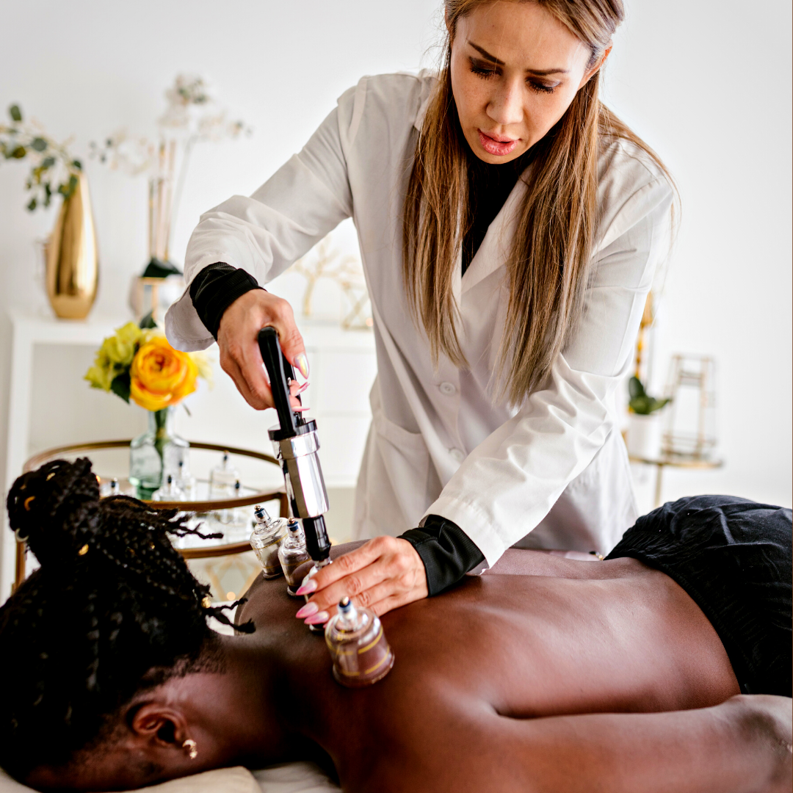
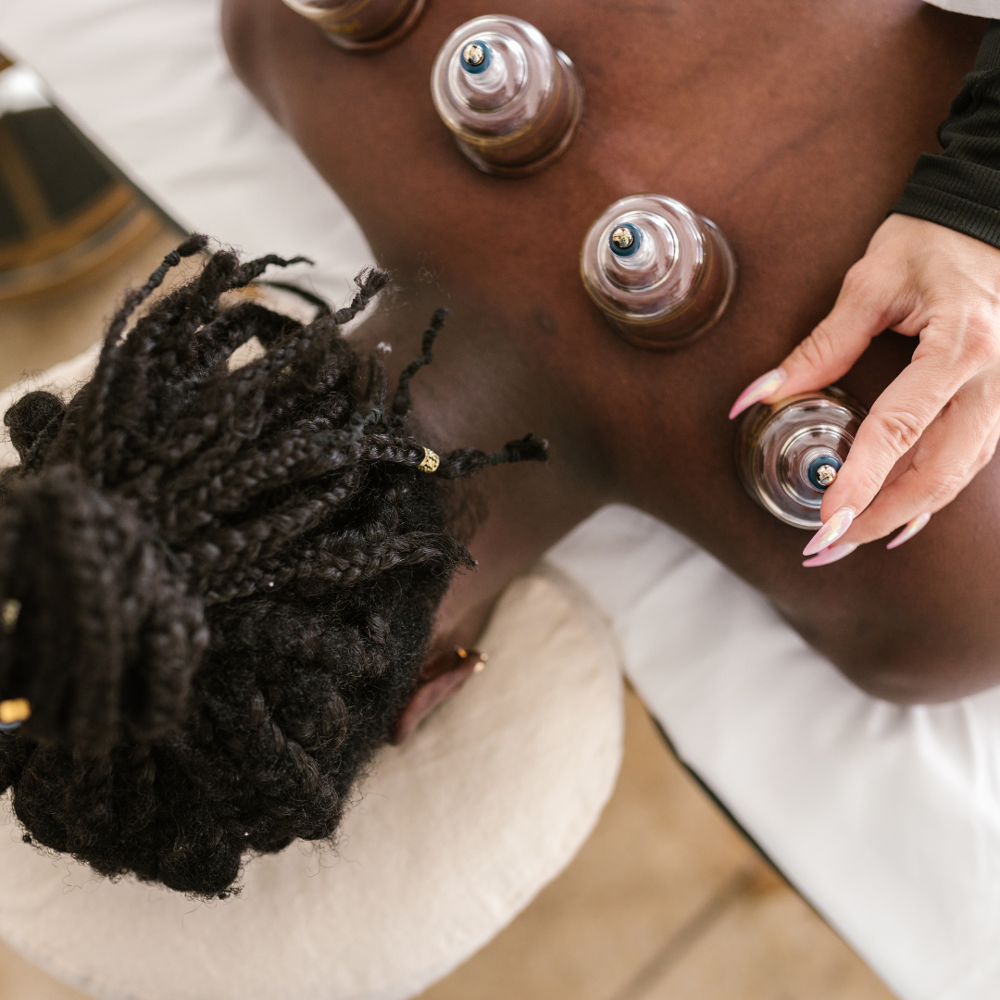

O que é a Ventosaterapia?
Uma técnica da Medicina Tradicional Chinesa, a ventosaterapia é indicada nos tratamentos de
diversas patologias, atuando com caráter terapêutico em distúrbios reumatológicos, neurológicos,
vasculares e dermatológicos.
Método que utiliza um recipiente de vidro ou acrílico que ao ser
posicionado na pele com uma pressão negativa, faz a sucção da pele, a
im de promover hiperemia (aumento da circulação sanguínea),
estimulando os tecidos e terminações nervosas.
No início da técnica, que era utilizada pelos chineses e egípcios –
e é utilizada até os dias atuais – a aplicação era feita
com chifres e cuias. Com o passar do tempo e como a técnica foi
sendo aperfeiçoada pela Medicina Tradicional Chinesa (MTC),
a aplicação passou a ser feita com diversos tipos de ventosas, como as de vidro, acrílico,
bambu e plástico.
A técnica é indicada nos tratamentos de diversas patologias,
atuando com caráter terapêutico em distúrbios
reumatológicos, neurológicos, vasculares e dermatológicos,
também abrangendo tratamentos pós-operatórios diversos
ou simplesmente visando a regularização do fluxo de Qi e sangue (Xue) nos meridianos,
podendo ser associada a sangrias dos pontos.
A aplicação de ventosas é contraindicada para casos de febre alta,
convulsões ou cólicas, alergias na pele ou
inflamações ulceradas, áreas onde o músculo é fino ou a pele não é plana
por causa dos ângulos e depressões ósseas, no abdômen e região lombar em gestantes.
Algumas outras considerações a ter no uso das ventosas é que
estas devem ser deixadas no local somente até haver congestão local (geralmente alguns minutos)
ou aplicadas através de movimentos de deslizamento sobre áreas ou trajetos de meridianos.
Se forem mantidas por muito tempo pode haver a formação de bolhas ou lesões, que devem ser evitadas.
Indicações
Indicado para qualquer idade, tratamento indolor, melhora imediata dos sintomas.
- Dores musculares.
- Contraturas musculares vindas do estresse.
- Lombalgias.
- Cervicalgias.
- Melhorar o sistema circulatório.
- Entre outras patologias.
Benefícios
- Auxilia na retirada de resíduos da pele.
- Aumenta a captação de oxigênio.
- Facilitando o fluxo de fluidos.
- Melhor circulação sanguínea no local.
- Redução de dor.
Atendimento
Atendimento de 50 minutos, individual.
O método de aplicação da ventosaterapia pode ser fixo ou móvel,
com intensidade fraca ou leve dependendo de cada pessoa.
A aplicação de ventosas fixas pode durar de cinco a dez minutos, porém o
atendimento é composto com massagem e outras técnicas relaxantes.
Temos uma Promoção para os 20 primeiros Agendamentos, corra e garanta !
continuou com dúvidas ? Chame a gente no whatsapp!

